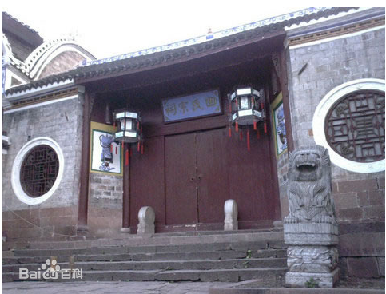
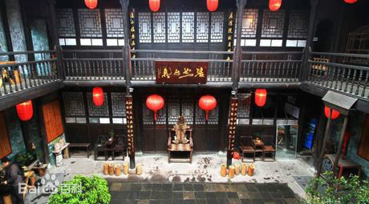
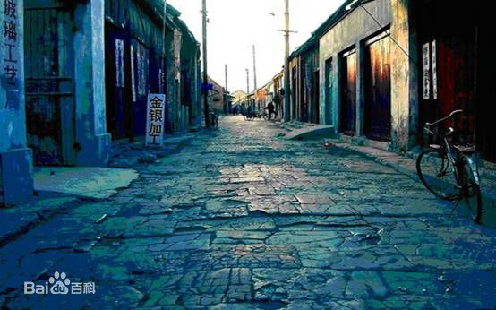

-
-
神凤文化景区
凤凰神凤文化景区由二十多处景点组成：凤凰六句阵、凤凰台、凤竹林海、有凤来仪、凤缘亭、引凤桥、百鸟朝凤、九九神阶、秋秋楼等。
-
田家祠堂
田家祠堂位于沱江北岸的老营哨街，始建于清道光十七年（1837年），为时任钦差大臣、贵州提督的凤凰籍苗族人士田兴恕率族人捐资兴建。
-
 沈从文墓地
沈从文墓地墓地所在地原名叫“杜母园”，系清代曾任钦差大臣、云贵提督的凤凰籍苗族人士田兴恕为其母杜氏修建的花园。
第三火爆 -
北门古城楼
始建于明朝。凤凰北面，俗称北门城楼， 北门古城楼,本名“壁辉”。北门古城楼始建于明朝。凤凰元、明时为五寨长官司治所，有土城。
-
陈斗南宅院
建于清光绪二十八年（1902年），位于古城内吴家弄一号，为四水归堂回廊式院落，四周防火墙高深严密，是江南典型的四合院。
-
 沱江吊脚楼
沱江吊脚楼吊脚楼群座落在古城东南的回龙阁，前临古官道，后悬于沱江之上，是凤凰古城具有浓郁苗族建筑特色的古建筑群之一。
-
石板老街
宽不足5米的青石板街，自道门口往西，经十字街、东正街、西正街、回龙阁、沈从文墓地直至天下第一泉，全长3000多米。是凤凰最繁华的商业街。
-
 万名塔与遐昌阁、虹桥相映。塔用青砖和混合沙浆以及钢筋混泥土砌筑而成。塔为六方、七级，每层六个翘角，且悬挂铜制风铃。
万名塔与遐昌阁、虹桥相映。塔用青砖和混合沙浆以及钢筋混泥土砌筑而成。塔为六方、七级，每层六个翘角，且悬挂铜制风铃。 -
乌龙山风景区
乌龙山景区距凤凰古城28公里， 《乌龙山剿匪记》故事发源地。位于湘黔边界算深山峡谷之中。至今尚较完好地 保存着原始生态之风貌。
-
 虹桥
虹桥原名卧虹桥，又称“风雨楼”，建于明洪武初年，位于是凤凰的中心。在虹桥上看整个凤凰城，沱江两岸的如画风景尽收眼底。